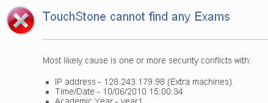
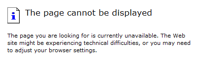
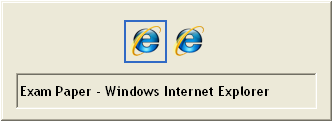
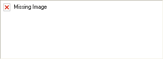
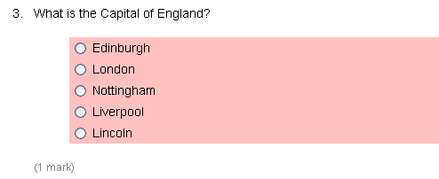

V prihlasovacom dialógu kliknite na tlačidlo 'Späť'. Na ďalšej obrazovke bude správa 'Prístup zamietnutý'. V dolnej časti je odkaz na 'Dočasný účet', kliknite naň. Dostanete sa k on-line formuláru a systém Vám pridelí dočasný účet a heslo. Prihláste sa pod týmto účtom a vykonajte skúšku.
V prípade, že sa jednému alebo dvom študentom dokument nezobrazí, poproste ich, aby sa opätovne prihlásili. Ak dokument skúšky nie je možné zobraziť celej učebni, zavolajte pre získanie pomoci na tiesňové číslo.

Reštartujte počítač, prihláste sa znova na vyššie uvedenej URL a následne kliknite na 'Reštart>>' odkaz sa nachádza vedľa času/dátumu zobrazených predchádzajúcich pokusov. Uistite kandidáta, že na záver je možné získať, v prípade potreby, viac času. Spýtajte sa tiež, či prekontroloval, že sú uložené odpovede v predchádzajúcich oknách dokumentu.
Zatvorte dokument pomocou Alt+F4; potom 'Reštartujte' (na modrej obrazovke); následne nech kandidát prekontroluje odpovede v okne, kde došlo k poruche.

Použitím <ALT> a <TAB> v cykle okien s dokumentmi sa okno znova objaví. Ak sa dokument neobjaví, kliknite na 'Reštart' na modrej obrazovke.

Pre opätovné načítanie obrázkov prejdite na ďalšoe okno a následne späť. Ak majú rovnaký problém všetci študenti, nahláste problém správcom e-testovania.

Vizuálne varovanie naznačuje, že úloha nebola doteraz zodpovedaná (je to teda charakteristika, nie problém).

Oznámte kanditátom, že majú kliknúť na ikonu núdzového opustenia (je umiestnený v každom rohu okna), poznamenajte si čas a informujte kandidátov, že doba trvania skúšky bude o stratený čas predĺžená. Ak musí byť učebňa evakuovaná oznámte kandidátom, aby si pamätali, pri ktorom počítači sedeli, aby v prípade návratu mohli v skúške pokračovať.
Prejdite na spodnú časť obrazovky a kliknite na tlačidlo 'Pokračovať'.